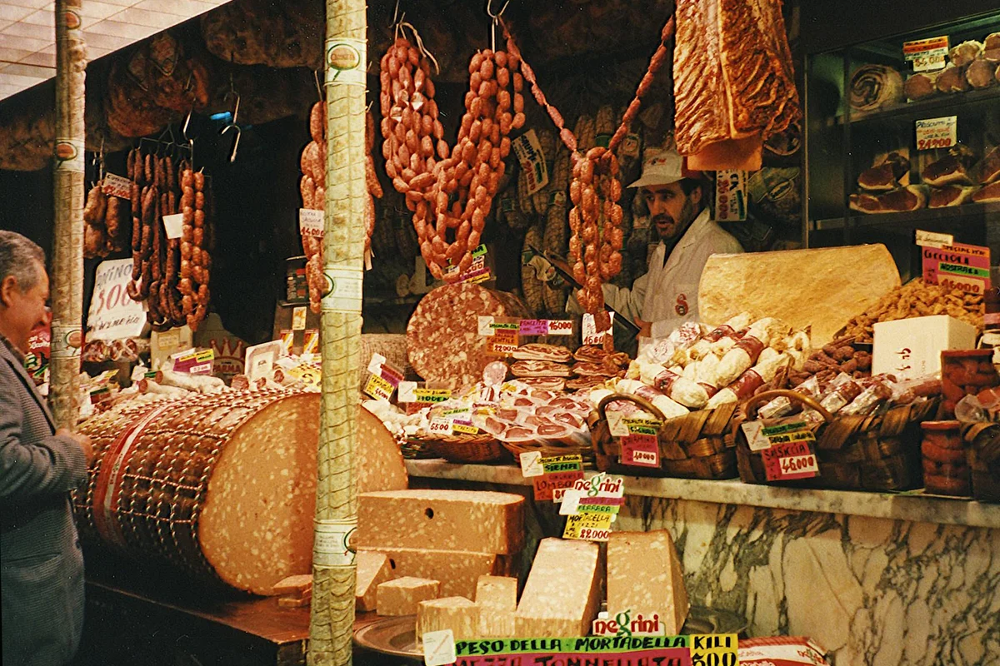
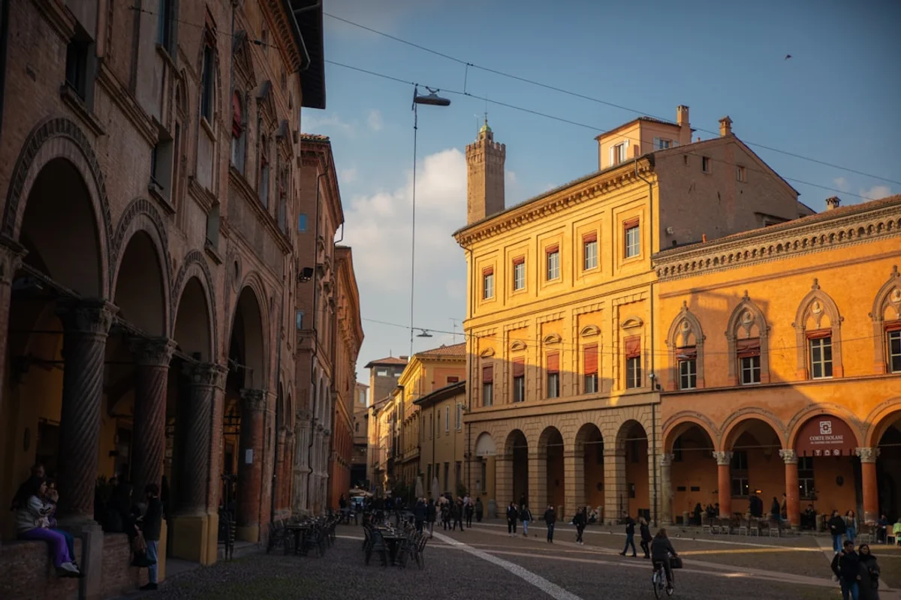

Introduction
Bologna has been quietly winning the argument about which Italian city deserves the title of culinary capital for decades. But lately, the conversation has gone global. Between viral food reels, a surge in gastro-tourism, and the city's growing reputation as a serious alternative to Florence for travellers who actually care about eating well, the streets around Piazza Maggiore are busier than ever. And nowhere feels that pressure more acutely than Bologna's two great food markets.
For anyone researching Bologna local food market hidden gems, the same two names keep appearing: the Quadrilatero and the Mercato delle Erbe. They are different animals entirely. One is a centuries-old street market woven into the city's medieval fabric; the other is a covered hall that has quietly reinvented itself while staying true to its neighbourhood roots. Both are essential. Neither is interchangeable.
The real question is not which one is better. The question is: which one is right for what you want to do, at what time of day, and what does each reveal about the way Bologna actually feeds itself? This is that answer.
The Quadrilatero: A Living Stage for Bolognese Food Culture
The Quadrilatero is not really one market. It is a medieval street grid, roughly bounded by Via Rizzoli, Via Castiglione, Via Farini, and Via dell'Archiginnasio, where food sellers have occupied the same narrow lanes for over 500 years. The street names still carry the trades: Via Pescherie Vecchie (the old fishmongers), Via Drapperie (the drapers), Via Clavature. Walking through on a Tuesday morning feels less like shopping and more like stumbling into a rehearsal that has been running since the 13th century.
What actually lines these streets today is genuinely extraordinary. Paolo Atti e Figli, one of the oldest pasta shops in Italy (founded 1880), sits on Via Caprarie selling fresh tagliatelle and tortellini alongside the same egg-yellow sfoglia dough that has been rolled here for generations. Around the corner, Tamburini, a salumeria institution on Via Caprarie since 1932, stacks mortadella in slabs the size of a grown adult's torso. These are not curated tourist experiences. They are functioning food businesses that happen to be extraordinary.
But here is what the glossy guides rarely say plainly: the Quadrilatero has become performative. That is not entirely a criticism. The theatricality is part of its value. Vendors here are expert communicators who know exactly what a visiting food lover wants to see and taste. Prices reflect this. A slice of mortadella handed over the counter at Tamburini costs more than you would pay at a neighbourhood salumeria on the other side of the city. A small wedge of Parmigiano Reggiano aged 36 months from one of the dedicated cheese stalls will set you back considerably. The product quality often justifies this, but the gap between Quadrilatero pricing and residential-neighbourhood pricing is real and worth knowing before arrival.
The best time to visit is between 8:30 and 10:30 on a weekday morning. The fish stalls on Via Pescherie Vecchie are restocked and active, the vegetable sellers are at full display, and the cafés in the adjacent streets are serving colazione to actual Bolognesi before the tourist foot traffic builds. By noon, particularly on weekends, the lanes become genuinely congested and the experience shifts from neighbourhood immersion to crowd navigation.
Mercato delle Erbe: The Covered Hall That Never Stopped Being Real
A ten-minute walk from the Quadrilatero, tucked on Via Ugo Bassi, the Mercato delle Erbe opened its doors in 1910 inside a purpose-built iron and glass structure. For most of the 20th century it was simply where people in this part of Bologna bought their vegetables, their eggs, their cheese, and their weekly supply of dried pasta. It had no particular cachet. That was entirely the point.
Something interesting happened around 2012 to 2015. A series of small food and drink operators moved into stalls at the back of the market, setting up wine bars, a butcher-turned-lunch counter, a natural wine shop, and a modest cocktail spot. Rather than displacing the traditional vendors, they operated alongside them. The result is a market that functions simultaneously as a genuine daily food hall from 7:00 in the morning until around 13:00, and as a relaxed aperitivo and lunch destination from midday into the early evening.
The traditional vendors are the reason to arrive early. Look for the fruit and vegetable sellers who source locally from the Emilian countryside: yellow peaches from Romagna in summer, fat white asparagus in spring, squash varieties you will not find in a supermarket. The cheese stall near the central aisle typically stocks crescenza (a soft, spreadable fresh cheese almost never seen outside Emilia-Romagna), proper Parmigiano aged by different producers, and squacquerone, the spreadable Romagnolo cheese that belongs on a piadina and nowhere else.
For lunch, the market transforms noticeably. Oziare, one of the wine bar counters inside, pours excellent natural wines by the glass from around 11:00. The lunch crowd at the shared tables in the central space is genuinely local: university staff, architects from nearby offices, retired couples splitting a plate of affettati misti. Prices are honest. A glass of good Emilian Pignoletto, a portion of mortadella, and a piece of focaccia will not exceed eight euros.
If the Quadrilatero is Bologna performing for an audience, the Mercato delle Erbe is Bologna talking to itself.

The Insider Angle: What Both Markets Get Wrong (and Right) in 2025
Here is the contrarian take that rarely appears in travel content about these two markets: neither is actually the best place in Bologna to eat a proper lunch if you are looking for the city's most authentic midday experience. Both have, in different ways, adjusted their identities to accommodate the visitors who now seek them out specifically.
The Quadrilatero's lunch scene, particularly the handful of bars and tavola calda counters along the main lanes, has priced itself for gastro-tourism. The standing aperitivo at these spots has become a social media ritual as much as a food experience. That is fine. It is still good. But it is not how a Bolognese office worker eats on a Wednesday.
The Mercato delle Erbe has stayed more grounded, but its wine bar renovation has attracted a following that is increasingly self-aware. On a Friday evening during aperitivo hour, the atmosphere is wonderful but the crowd is not uniformly local anymore. That is the inevitable cost of doing something well.
The genuinely underexplored option, the one that most market guides skip entirely, is to treat both markets as shopping destinations rather than eating destinations, and then take your purchases somewhere else entirely. Buy your mortadella at the Quadrilatero, your fresh pasta from Paolo Atti e Figli, your cheese from the Mercato delle Erbe, a bottle of Colli Bolognesi Pignoletto from one of the wine merchants on Via degli Orefici, and find a bench under the porticoes near Piazza Santo Stefano. That impromptu picnic under 900-year-old arcades is a more Bolognese experience than almost anything you could sit down to in either market.
Also worth noting for 2025: the ongoing renovation works around the northern edge of the Quadrilatero have shifted some vendor positions and reduced pedestrian flow through parts of Via Clavature. Before visiting, a quick check of current access routes is worthwhile, particularly if arriving from the direction of Piazza Galvani.
Practical Information: Hours, Prices, and How to Plan Your Visit
Quadrilatero
The market operates as an open-air street market with individual shops and stalls. Most vendors are open Monday to Saturday, approximately 07:30 to 13:30 and again from 15:30 to 19:30, though hours vary by vendor. Many stalls do not open at all on Monday mornings. Sunday sees minimal activity. Key stops:
- Paolo Atti e Figli (Via Caprarie 7): fresh pasta, crescentine, baked goods. Expect to spend 10 to 18 euros for a generous portion of fresh pasta to cook at home.
- Tamburini (Via Caprarie 1): salumeria and a tavola calda counter. Lunch plates from around 12 euros.
- The fish stalls on Via Pescherie Vecchie: primarily a morning experience, winding down by noon.
Mercato delle Erbe
Located at Via Ugo Bassi 25. Traditional vendors operate Monday to Saturday, 07:00 to 13:30. The wine bar and lunch counters typically open from around 11:00 and stay active until approximately 22:00, depending on the specific operator. Closed Sunday.
Pricing for the food hall vendors is noticeably lower than the Quadrilatero. A full portion of affettati misti (cured meats selection) with bread runs 6 to 9 euros. Wines by the glass at the internal bars start around 3.50 to 5 euros.
Distance between the two: on foot, allow 10 minutes walking west along Via Rizzoli and Via Ugo Bassi. It is entirely practical to visit both in the same morning, starting at the Quadrilatero before 09:00 and arriving at the Mercato delle Erbe by 10:30 for late breakfast or early lunch.

What to Buy at Each Market: A Specific Shopping List
Generic advice about buying local produce is not particularly useful. Here is a specific, practical list for each market based on what each does genuinely well.
At the Quadrilatero, prioritise:
- Mortadella IGP: the real thing, from a serious salumeria like Tamburini or one of the smaller family operations on Via Drapperie. Ask for a slice cut on the spot and eat it immediately. The difference between freshly cut mortadella and pre-packed versions is not subtle.
- Fresh egg pasta to take home: Paolo Atti vacuum-seals fresh pasta for travel. Tortellini and tagliatelle travel reasonably well for a day or two if kept cool.
- Aged Parmigiano Reggiano: the cheese vendors in the Quadrilatero typically stock multiple aging profiles (24, 30, 36 months). A 36-month minimum is the sweet spot for flavour without excessive dryness.
At the Mercato delle Erbe, prioritise:
- Squacquerone: this fresh spreadable cheese is sold in small tubs and is genuinely difficult to find outside Emilia-Romagna. Buy it, eat it on bread that same day.
- Seasonal vegetables from local farms: the produce section skews toward Emilian and Romagnolo suppliers rather than wholesale distributors. Ask vendors where specific items come from; most will tell you directly.
- A glass of something local: Pignoletto dei Colli Bolognesi is the indigenous white wine of the Bologna hills, lightly sparkling in its frizzante form, and it pairs absurdly well with everything you will have just purchased. The wine bars inside the Erbe pour it well.
Final Thoughts
Bologna's two great food markets are not competing with each other. They are telling two different chapters of the same story: one about the performance of food culture, one about its daily practice. Treating them as alternatives is the wrong approach entirely. They reward the visitor who is willing to give each space the time and attention it deserves on its own terms.
The Quadrilatero is a living archive of what Bolognese food culture looks like when it is at its most concentrated and visible. The Mercato delle Erbe is what that culture looks like when it is not performing at all. Both are essential. The gap between them, that ten-minute walk along Via Ugo Bassi, is worth taking slowly.
If this article helped you plan your time in Bologna more thoughtfully, or if it changed how you think about the difference between a food market for visitors and a food market for residents, consider sharing it with someone who is planning their own trip. The best food discoveries are always better when passed on.
Frequently Asked Questions
Is the Quadrilatero in Bologna worth visiting or is it too touristy?
The Quadrilatero is genuinely worth visiting, but the experience depends heavily on when you go. Arriving on a weekday before 10:00 gives access to the market at its most authentic, with working vendors and local shoppers. By midday on weekends it becomes congested and more tourist-facing. The product quality at shops like Paolo Atti e Figli and Tamburini is legitimately excellent even if prices are higher than elsewhere in the city.
What is the difference between the Quadrilatero and Mercato delle Erbe in Bologna?
The Quadrilatero is an open-air medieval street market in the historic centre, primarily composed of specialist food shops and stalls selling premium Bolognese products. The Mercato delle Erbe is a covered market hall from 1910 on Via Ugo Bassi that functions as a daily neighbourhood grocery market in the mornings and a wine bar and lunch spot from midday. The Erbe is generally considered more local and everyday in character; the Quadrilatero is more theatrical and premium.
Where do locals actually eat lunch in Bologna near the markets?
For an authentic local lunch experience, the Mercato delle Erbe is the better option, particularly the shared tables in the central hall where neighbourhood workers and university staff eat affordably. That said, many Bolognesi prefer to buy ingredients at the markets and eat elsewhere entirely, often taking food to eat under the porticoes in squares like Piazza Santo Stefano.
What should I buy at the Bologna Quadrilatero market?
The top purchases at the Quadrilatero are freshly cut mortadella IGP, fresh egg pasta (particularly tortellini and tagliatelle from Paolo Atti e Figli), and aged Parmigiano Reggiano (aim for at least 30 months aging). These are products the Quadrilatero vendors specialise in and where the quality premium over supermarket alternatives is most justified.
What time does the Mercato delle Erbe in Bologna open and close?
The traditional food vendors at the Mercato delle Erbe (Via Ugo Bassi 25) are open Monday to Saturday from approximately 07:00 to 13:30. The internal wine bars and lunch counters typically open from around 11:00 and operate into the evening, often until 22:00. The market is closed on Sundays.
Is Mercato delle Erbe in Bologna good for vegetarians?
Yes. The Mercato delle Erbe has a strong produce section sourcing from Emilian farms, with excellent seasonal vegetables, fresh cheeses including squacquerone and crescenza, eggs, and local honeys. The wine bars inside also offer vegetable-forward small plates. It is one of the better markets in Bologna for plant-based or vegetarian shopping and eating.